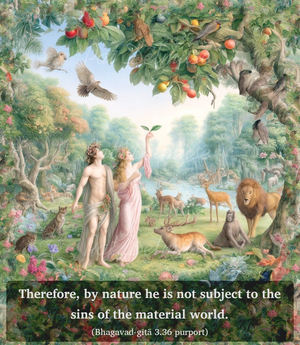

Arjuna said: O descendant of Vṛṣṇi, by what is one impelled to sinful acts, even unwillingly, as if engaged by force?


A living entity, as part and parcel of the Supreme, is originally spiritual, pure, and free from all material contaminations. Therefore, by nature he is not subject to the sins of the material world. But when he is in contact with the material nature, he acts in many sinful ways without hesitation, and sometimes even against his will. As such, Arjuna’s question to Kṛṣṇa is very sanguine, as to the perverted nature of the living entities. Although the living entity sometimes does not want to act in sin, he is still forced to act. Sinful actions are not, however, impelled by the Supersoul within, but are due to another cause, as the Lord explains in the next verse.